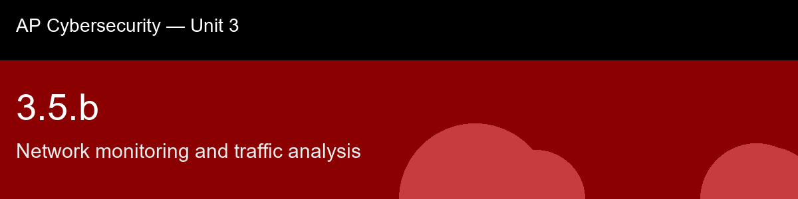

3.5.b, Network monitoring and traffic analysis
Before class today. An IDS signature engine (3.5.a) catches attacks it already knows about. Network monitoring is the
broader discipline of continuously watching traffic itself, volumes, ports, destinations, timing, so that an analyst can notice when something looks wrong even without a matching signature. It
is the practice of knowing what "normal" looks like well enough to recognize "not normal."
The intuition to hold onto: The habit to bring into this lecture, carried straight over from 3.5.a's anomaly-detection idea: you cannot know what's abnormal until you've actually measured what's normal first. That's not a throwaway line, it's the entire justification for baselining, and it reframes network monitoring as fundamentally a measurement discipline before it's ever a detection discipline. Skip the baseline and every alert is just a guess dressed up as a finding.
A myth worth busting before we start: "You need full packet capture to detect an attack." → Most anomalies (volume spikes, beaconing, unusual ports) are visible in flow records alone, without ever inspecting payload content.
Today's goal: Explain how baseline traffic profiles support anomaly detection, read basic flow-record and packet-capture data, and identify network-monitoring indicators of compromise such as beaconing, unusual port usage, and abnormal data-volume spikes.
Handout: pre-lecture-handout.docx.

## 3.5.b, Network monitoring and traffic analysis
**Before class today.** An IDS signature engine (3.5.a) catches attacks it already knows about. Network monitoring is the
broader discipline of continuously watching traffic itself, volumes, ports, destinations, timing, so that an analyst can notice when something looks wrong even without a matching signature. It
is the practice of knowing what "normal" looks like well enough to recognize "not normal."
**The intuition to hold onto:** The habit to bring into this lecture, carried straight over from 3.5.a's anomaly-detection idea: you cannot know what's abnormal until you've actually measured what's normal first. That's not a throwaway line, it's the entire justification for baselining, and it reframes network monitoring as fundamentally a measurement discipline before it's ever a detection discipline. Skip the baseline and every alert is just a guess dressed up as a finding.
**A myth worth busting before we start:** "You need full packet capture to detect an attack." → Most anomalies (volume spikes, beaconing, unusual ports) are visible in flow records alone, without ever inspecting payload content.
**Today's goal:** Explain how baseline traffic profiles support anomaly detection, read basic flow-record and packet-capture data, and identify network-monitoring indicators of compromise such as beaconing, unusual port usage, and abnormal data-volume spikes.
Handout: `pre-lecture-handout.docx`.